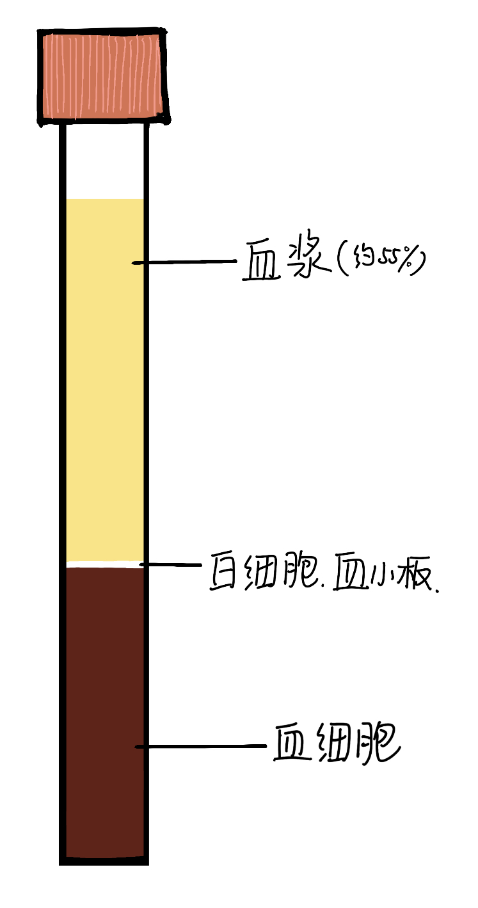

血液分层实验
血液的成分和功能
| 形态 | 组成 | 功能 | 含量 | 备注 | |
| 血浆 | 淡黄色半透明液体 | 水、血浆蛋白、葡萄糖、氨基酸、无机盐、废物 |
运载血细胞、运输养料和废物等 |
约占血液总量55% |
|
| 红细胞 | 呈两面凹圆盘状，成熟后无细胞核 |
- 富含血红蛋白 |
运输氧气 | - | |
| 白细胞 | 有细胞核，可变形，比红细胞大 |
- | 能包围、吞噬细菌，具有防御保护作用 |
- | 血液中白细胞含量突然增多说明身体有炎症 |
| 血小板 | 体积最小，形状不规则，无细胞核 |
- | 止血和促进凝血 |
- | 血小板过多：血栓 血小板过少：血流不止 |
关于血红蛋白：含铁，在氧浓度较高的地方与氧结合，在氧浓度低的地方与氧分离
关于血浆蛋白：血浆内所有蛋白质的总称，具有凝血、免疫的功能
各种血管的结构特点
| 血管 | 管壁 | 管腔 | 流速 | 分布 | 功能 |
| 动脉 | 较厚、有弹性 |
较小 | 快 | 一般分布较深，少部分分布较浅 |
心脏→身体各部分（离心） |
| 静脉 | 较薄，弹性小 | 较大 | 慢 | 一般分布较浅，少部分分布较深 |
身体各部分→心脏（回心） |
| 毛细血管 | 非常薄，只由一层上皮细胞构成 | 极小，只允许一行红细胞单行通过 | 最慢 | 数量较多，遍布于全身各处 |
便于血液与组织细胞物质交换 |
主动脉→各级动脉→毛细血管（物质交换）→各级静脉→主静脉
跳转到下一个文档-输送血液的泵-心脏